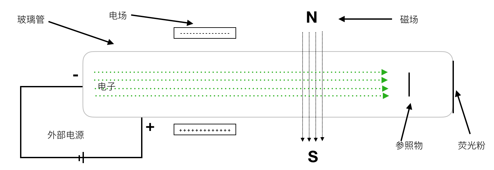
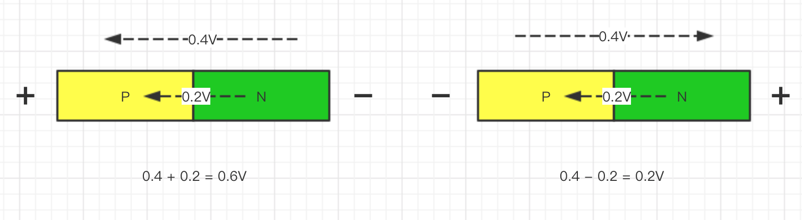
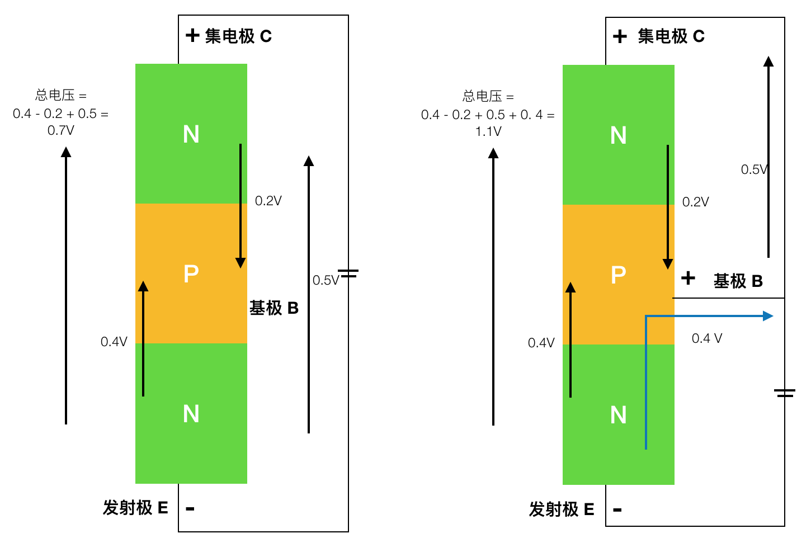
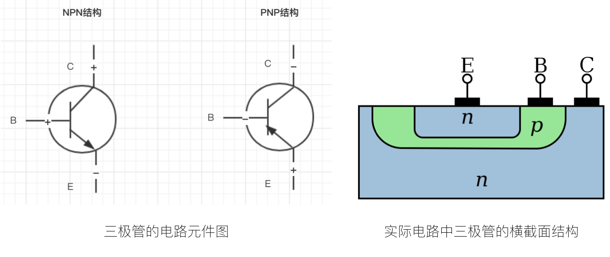

深入分析电子以及三极管的工作形式
经过对更多的资料的查阅，我发现搞清楚整个电子的发现过程对理解三极管的工作原理有更大帮助。并且我将思路从分析电子的运动规律切换到分析电子形成的电场，对晶体管的工作原理分析 就更顺畅了。目前还无法观察到电子的运动轨迹，所以想详细的分析电子的分布和运动轨迹也是一个目前来说 走不通的思路。
想要理解这篇文章需要具有一定的物理知识。
在电子发现之前，科学家已经对 电 磁 光 力 热 有一定的研究基础。法拉第的实验 发现了 电 和 磁 之间的相互作用，点可以产生磁场，磁场可以影响电流的方向，磁场 在 力 的作用下形成运动，运动的磁场 使 磁场发生变化，变化的磁场会产生电流。
电流是物理中的原子进行无规则的运动，这个运动的加剧会对应发热。光 中的光子 不会受到磁场的影响，也不会对电产生影响，光却会发热。
1. 电子的基本知识-电场 电势
我们现在知道，电流是导体中的电子的定向运动(大体方向上)。物体中的电子在一般情况下是动态平衡的，他的运动会在不同的原子核之间迁移，但不形成电流，若需要让物体形成电流则需要外力的作用下，电子与原子核中的质子之间一个带 负电 一个带正电，两者之间存在相互的心引力，且带同性电荷的粒子之间存在相会排斥的力。若我们想要让物体内部形成电流就要打破物体内部电子的动态平衡，这个力就是通过电荷与原子核的作用力来形成。
一般我们使用的是电池，化学电池是通过化学作用，使物体内部的化学作用情况下，使电子移动起来，与其他的原子核结合形成新的物质。这种东西就具有电势，也就是说 ___拥有使电子移动的能力___，这个能力一般会用电压来表示。我觉得用电势的概念对二极管、三极管的工作原理进行解释更能说的通。
2. 电子的发现-阴极射线管
阴极射线管 简单来将就是将电源正负极接到一个玻璃管两端，并尽量保持玻璃管中为真空，这样便于观察电路导体中到底发生着什么。随着电磁感应原理在实际中的运用，人们发明了通过电磁感应线圈放大电池中的电压的装置。研究电的科学家将高压电加到阴极射线管上，发现玻璃管内部发光了，由于是发光人们第一想到的这是光子，另一些人不这么认为，那就要实验证明了。
1. 磁场作用下
增加磁场到光束，光束是会因磁场而改变运动轨迹了，这其实已经能说明了这不是 光子了
2. 电场作用下
在当时，增加电场的时候是观察不到光束在电场的作用下 运动轨迹的偏移变化的。汤姆逊(就是他发现的电子) 认为这是因为玻璃管的真空不够，所以他对抽空气的真空泵进行了大幅改进。当玻璃管更接近真空的时候，发现光束消失了，但在玻璃管的一端涂上荧光粉的时候就能观察到荧光粉的发光了，也就是说粒子还是存在的。后来发现，其实光束的颜色是玻璃管中的稀有其他发出的颜色，空气中存在稀有气体，真空程度不高的时候，稀有气体就会存在于玻璃管中，产生光亮。
这个时候在更真空的情况下，在电场的作用力下，这里的粒子运动轨迹会被改变，这进一步证实了这种粒子带电，并且不是光子。
3. 是否有质量
通过风车实现，也就是让阴极射出来的粒子打在一个风车的叶子上，风车会转动起来，反转两极 风车还会反转转动方向。这说明这个粒子是有质量的。
4. 发现电子
当时人们已经对原子很熟悉了，并认为原子是最小粒子了，但是要证明这里 阴极射线管 中的粒子是原子还是其他呢。通过对这个粒子的质量进行计算 发现其质量比原子的质量小的多，说明这并不是原子 而是原子的一部分。
最终汤姆逊将其命名为 electron 中文译为 电子。

如图，电子从阴极射出，大部分电子会从阳极进入。由于电子的运动惯性，会有一小部分的电子向前移动，这些就是我们观察到的电子，且电子也会在碰到右侧的玻璃壁后反弹回来。
3. 二极管的工作原理
二极管是通过不同参杂的元素拼接成一个导体 称为 PN 结构，我们用电场 电势的概念对其导电性的分析。从一般概念上，在特定电压下，PN结构中电子从 N 到 P 是形成电流通路的，而从P 到 N 则不能形成通路。

从图中可以看出，电子是有从 N 到 P 的电势的，我们通过外部电池当提供一定电压的时候，给这个 N 到 P 的电势增强，推动电子的运动 则会形成电流。相反，当我们反转电池正负极，也就是给 一个相反的电势，这个电压需要先抵消掉 PN 结构中存在的电势，才能使电子运动形成电流。
这样的特性就可以实现 正向导电 反向不导电的效果。比如 内部形成的电势电压为 0.2V 他需要 0.5V以上 的电压才能使内部的电子运动，我们给 PN 结构的 N极 加负电，P极加 正电，电压为 0.4V ，这个时候是对 内部电势的增强 我们就得到一个 0.2 + 0.4 = 0.6V 的电压 ，0.6V > 0.5V 则可以推动电子运动，相反 我们给 N极正电 P极负电 电压也为 0.4V，由于这个电场方向是跟 PN 内部电场相反，这样得到的电压是 0.2 - 0.4 = -0.2 V 这个反向的 0.2V电压小于 PN 中电子运动需要的 0.5V 电压，所以不能形成电流。
当然 当我们将反向的电压增大，也是能使其内部电流运动的，这个电压是 击穿电压。
4. 三极管工作原理的分析

如上图所示，是一个三极管的简单表示，三极管是对二极管的一个升级，有 NPN PNP 两种结构，这里只分析 NPN 结构的情况，这个在继承电路中比较常用。
从上到下的 NPN 结构上， 上面的N称做 集电极 (Collector 简称C) 下面的N 称做发射极 (Emitter 简称 E) 中间的P称作 基极 (Base 简称 B) 。若假设电流电压达到 1V 以上才能识别到电流，在左图中基极没有加电压的情况下，整个三极管得到的电压是 0.7V，达不到1V电压，当给基极加入电压 0.4V 如右图所示，则整个三极管得到的电压为1.1V，这就达到了电流所需电压。
根据欧姆定律可知 电压与电流是正比的，基极电压越大 整个三极管的电流越大。还有一个问题是，电子为什么会大部分到达了集电极，而不是到达基极。这个要考虑三极管三个极的不同构造了，其中发射极的体积小 参杂度高 内部电子浓度高，集电区 提价大 参杂低 电子浓度低，基极体积小 参杂低 内部空穴浓度低。当在合适的电压下，发射极大量的电子会运动起来，一方面集电极电子浓度小 对发射极发射出来的电子阻力小，基极与发射极形成的回路 在达到电流平衡时并不需要很多的电子，因为基极的空穴浓度很低，且基极体积单位小厚度薄，最终电子更多的是流向集电极。
这样就可以通过改变基极电压，来控制发射极到集电极的电流大小与通断，实现了对电流的放大效果，也实现了开关的功能。
